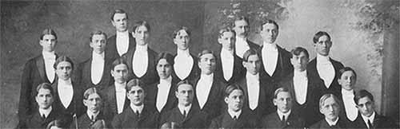
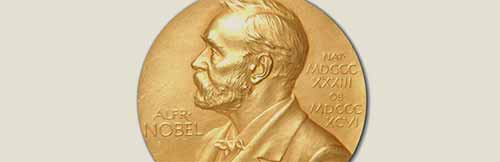
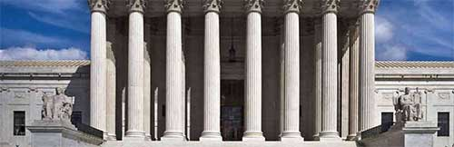
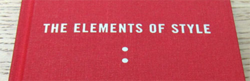
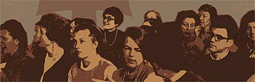
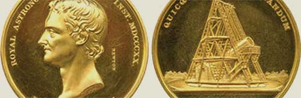

1868The Cornell University Glee Club is founded within a month of the opening of Cornell.
1870Charles Frederick Hartt of the geology department took 11 Cornell students to Brazil on what was probably one of the university's first archaeological expeditions, where they did archaeological and ethnographic work as well as geological sampling.
1880Burt Wilder of the then department of zoology began collecting human brains for comparative study as part of his research on primates. The remains of the Wilder brain collection are held by the psychology department, with a display in Uris Hall.
1883North Hall renamed White Hall, after former Cornell President and Cornell historian Andrew Dickson White.
1885-1892Cornell History Professor Charles Kendall Adams serves as Cornell University's second president.
1891Department of Psychology Founded
1894Margaret Floy Washburn becomes the first woman to gain a Ph.D. in psychology.
1898The plaster cast gallery opens in McGraw Hall.
1898The Department of Elocution and Oratory is founded, becoming the Department of Public Speaking, the Department of Speech and Drama, the Department of Theatre Arts and today the Department of Performing and Media Arts.
1900A Tlingit totem pole collected in southeastern Alaska by the Harriman Alaska Expedition, which included Cornellians Bernard Fernow and Louis Agassiz Fuertes, was brought to Cornell, where it remained on campus for several decades before being relocated to the Arnot Forest and eventually repatriated to Alaska in 2001.
1904First meeting of the Society of Experimental Psychologists, founded by E.B. Titchener.
1912Psychology split with philosophy at Cornell to become a separate department.
1918Cornell Professor of English William Strunk writes "The Elements of Style."
1921Cornell University Chorus is founded.
1921E. B. White, New Yorker essayist, author of "Charlotte's Web" and "The Elements of Style," graduates with a degree in English.
1923Baker Laboratory is completed in the Department of Chemistry.
1924The Department of Classics is founded.
1925Elbert Frank Cox PhD '25, becomes the first African-American to receive a Ph.D. in mathematics.
1930Otto Kinkeldey is appointed at Cornell as the first professor of musicology at a U.S. university. He is also the first president of the American Musicological Society.
1935Department of History is founded
1939The Department of Sociology is founded.
1942Cornell grants the first doctoral degree in music composition in the U.S.
1946John R. Mott '1888, a history and philosophy major and longtime leader in the YMCA, wins the Nobel Peace Prize for his work organizing international aid efforts.
1946The Division of Modern Languages (now the Department of Linguistics) is founded as one of the first departments in the country to incorporate a full program in modern Linguistics.
1946The Creative Writing Program was founded within the Department of English.
1946Biochemistry Professor James Sumner wins the Nobel Prize for his pioneering work purifying and crystallizing enzymes.
1946The Department of Far Eastern Studies is established, changing its name to Asian Studies in 1962.
1947The literary magazine EPOCH, is founded in the Department of English and edited by English faculty and students.
1954Ruth Bader Ginsburg '54 receives her bachelor's degree in government. She will go on to become the second female Supreme Court Justice of the United States in 1993.
1959"The Elements of Style" is published as revised and enlarged by E. B. White, William Strunk's student at Cornell. In this form it becomes and has continued to be a classic guide to writing.
1959Thomas Pynchon '59, author of "Gravity's Rainbow," graduates with a degree in English.
1959The modern Astronony Department is founded by Thomas Gold.
1960Donald Jay Grout, music professor from 1945-70, publishes "A History of Western Music," one of the most used music history texts by schools of Music and conservatories.
1960Janet Reno graduates with a degree in chemistry. She will go on to be U.S. Attorney General under President Bill Clinton.
1961Recent grad Michael Schwerner, '61 is shot and killed in Philadelphia, Mississippi by members of the Ku Klux Klan. Schwerner, Andrew Goodman, and James Chaney were in Mississippi as a part of "Freedom Summer."
1962The Department of Anthropology is established as a free-standing department.
October 9-10, 1962The Philadelphia Orchestra, conducted by Eugene Ormandy plays a concert in Bailey Hall for the dedication of the new Olin Library.
1963The Arecibo Observatory in Puerto Rico is dedicated.
1964Department of Neurobiology and Behavior is founded as faculty foresaw that the medical discipline of neurobiology was directly connected to the behavior studies being done in zoology and psychology departments.
1965Semitic Languages and Literatures Department (now Near Eastern Studies) is founded.
1965The Department of Comparative Literature is founded.
1965Cornell celebrates its centennial with a concert at the New York State Theater at Lincoln Center.
1965Paul Wolfowitz graduates with a degree in chemistry. He will go on to be President George W. Bush's deputy secretary of defense and president of the World Bank.
1965Medieval Studies Program is founded to bring together faculty in early studies from a wide range of departments at Cornell to mentor students and sustain a critical mass of interdisciplinary scholarship.
1966The Society for the Humanities is founded.
1967NBB faculty member William Keeton writes "Biological Science," what would become one of the most widely used introductory biology textbooks and integrated historically separate courses in botany and zoology.
1968Robert Holley, professor of biochemistry, wins the Nobel Prize for his work determining the sequence of alanine transfer RNA.
1969The Cornell Conference on Women takes place over a four-day period during winter intersession, leading to the first women's studies courses.
1971Science Magazine recognizes the work of sociology Prof. Louis Guttman on the development of scaling theory as one of the 62 major advances in social science between 1900 and 1965.
1973Professor A. R. Ammons of the English Department wins the National Book Award for "Collected Poems."
1973NBB's Thomas Eisner, together with Edward Wilson at Harvard, leads a team of biologists including NBB's Richard O'Brien who pioneer a more in-depth approach to teaching freshman biology, entitled "Life on Earth."
1973Physics Professor Edwin Salpeter receives the Gold Medal from the Royal Astronomical Society.
1981Department of Neurobiology and Behavior occupies its new, on-campus building (Seeley G. Mudd Hall). NBB faculty laboratories had been located for 17 years in Langmuir Laboratory at the Tompkins County Airport, but all teaching, committee activities, library work, etc., happened on the main campus.
1981Sociology Prof. Dorothy Nelkin testifies on behalf of the plaintiffs in McClean et al. vs. the Arkansas Board of Education. This case overturned Arkansas Act 590, legislation that required schools to balance instruction in evolutionary biology with "creation science."
1994President Bill Clinton awards Thomas Eisner of NBB the National Medal of Science.
2000Department of Molecular Biology and Genetics is founded, combining genetics, development and physiology with the biochemistry group. The genetics group can be traced back to Rollins A. Emerson and his "school" of maize geneticists, who established maize as one of the best known "genetic" organisms.
2001The Department of Near Eastern Studies plays a key role in campus and public education in the years after September 11, 2001.
2002Language Resource Center is founded to support the teaching of languages, which happens in seven departments of literature and cultural studies in the College of Arts and Sciences.